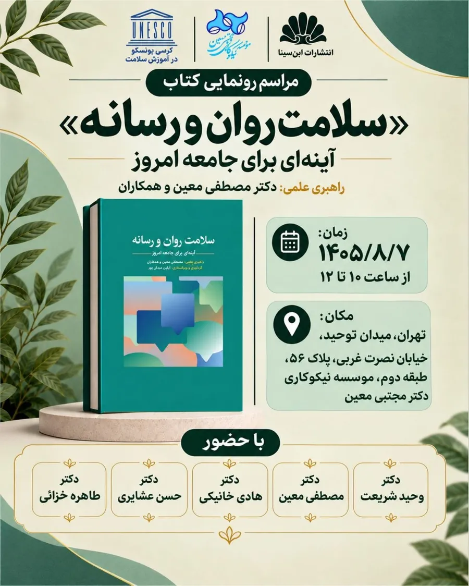
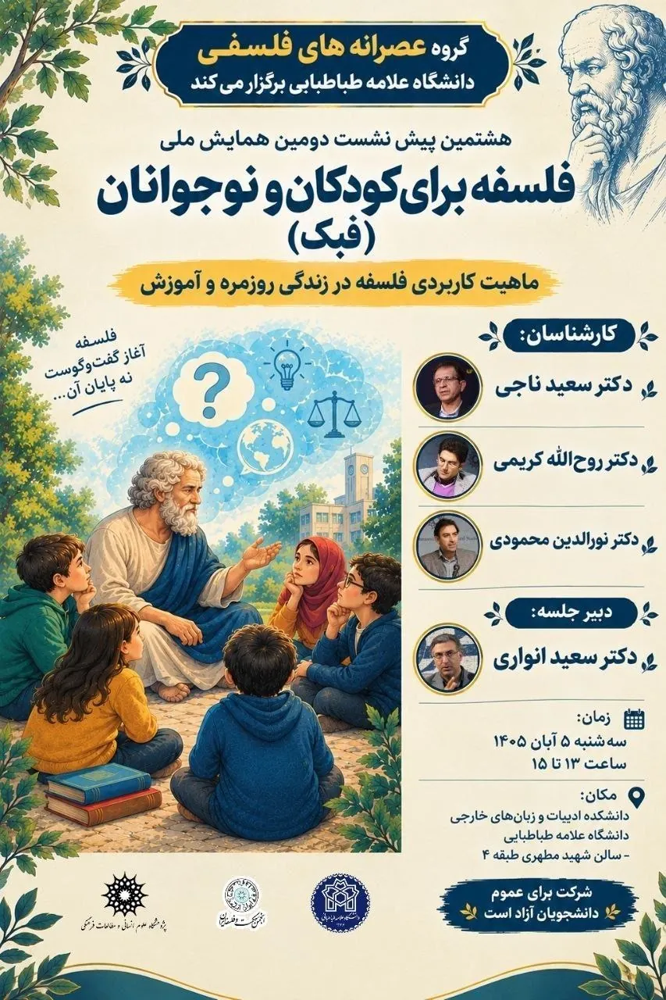
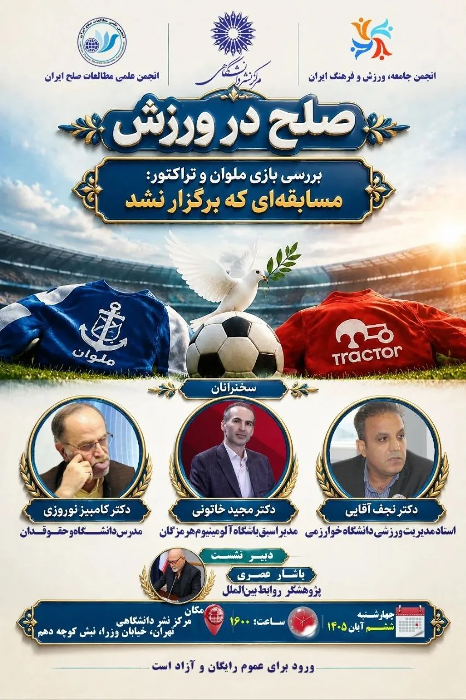
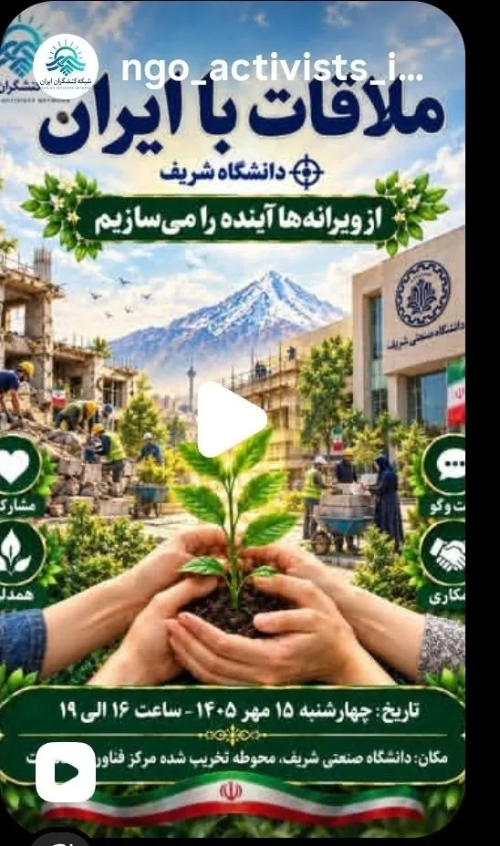
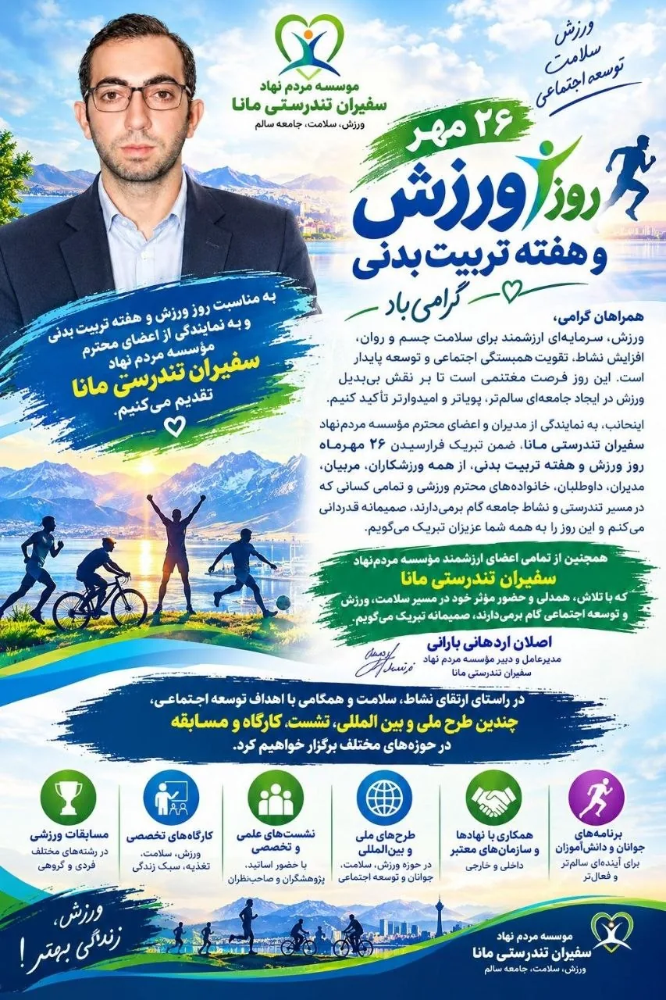
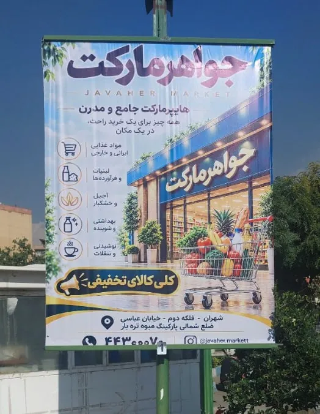

۱همهجا همهی پوسترها شبیه هم شدهاند
این روزها کافی است چند دقیقه در کانالهای تلگرام، استوریهای اینستاگرام یا خیابانهای شهر بچرخید. پوستر همایش، رونمایی کتاب، نمایشگاه، تخفیف فروشگاه. همه با هوش مصنوعی ساخته شدهاند و همه شبیه به هم هستند. برگهای سبز در گوشهها، نور طلایی، خطوط پرتووار کارتونی، نوارهای قلممویی پشت کلمهها، ترکیب چند زبان بصری ناسازگار، پر کردن تمام فضاهای خالی با آیکون و استیکر و تزئینات بیهدف.
وجود این عناصر بهخودیخود نشانهی طراحی بد نیست. مشکل زمانی ایجاد میشود که مدل آنها را بهصورت پیشفرض و بدون دلیل طراحی به کار میبرد. هدف این نیست که همهی پوسترها مینیمال باشند. هر عنصر باید از سبک انتخابشده و هدف پوستر ناشی شود، نه از عادتهای تکراری مدل.
از طرف دیگر، وقتی همهی پوسترها کموبیش شبیه به هم میشوند، چشم عادت میکند سریع از آنها رد شود و توجهی نکند. این درست برعکس چیزی است که میخواهیم. ما میخواهیم مردم به پوستر ما توجه کنند.






۲آزمایش: یک آگهی معمولی
برای اینکه ببینم میشود از این قالب بیرون آمد یا نه، یک سفارش واقعی را انتخاب کردم: پوستر «آفرهای ویژه» برای پتشاپ هلوپت. پوستر اولیه درست همان چیزی بود که انتظارش را دارید. پر از متن، پر از آیکون، پر از نارنجی، و یک عکس سگ و گربه که انگار از هر بانک تصویری میتوانست آمده باشد.
هوش مصنوعی وقتی سبکی را نمیشناسد، میانگین همهی سبکها را تحویل میدهد. و میانگین همیشه بیخاصیت و بیهویت است.
پس بهجای صفتهای کلی مثل «زیبا» یا «مدرن»، برای هر پوستر یک سبک مشخص را نام بردم. در همهی پرامپتها سه چیز ثابت ماند: فقط عنوان، لوگو، سایت و شماره تلفن حفظ شود. فضای خالی برای اطلاعات بعدی بماند. و فهرستی روشن از چیزهایی که نمیخواهم.
پرامپت کامل هر پوستر زیر تصویرش است.
۳از هنر ایران
اول سراغ سنت تصویری خودمان رفتم. از نگارگری مکتب هرات تا گرافیک مدرن دهههای ۴۰ و ۵۰ و هنرمندانی مثل سهراب سپهری، لیلی متیندفتری، مارکوس گریگوریان و مونیر فرمانفرمائیان.
در ادامه یکسری طرحهای ایرانی و بینالمللی دیگر:
۴سبکهای بینالمللی
بعد همان آگهی را به جریانهای شناختهشدهی طراحی گرافیک جهان سپردم. از مینیمالیسم ژاپنی تا سایکدلیک دههی شصت.
۵چیزهایی که یاد گرفتم
- اسم ببرید، توصیف نکنید.«مکتب هرات» یا «مینیمالیسم ژاپنی» برای مدل معنای دقیقی دارد. «شیک و جذاب» هیچ معنایی ندارد. نام یک هنرمند یا یک دوره حتی دقیقتر است.
- بگویید چه چیزی نمیخواهید.فهرست «از این موارد استفاده نکن» به اندازهی خود سبک مهم است. رد قلممو، آیکونهای پراکنده و افکت سهبعدی را بهصراحت ممنوع کنید، وگرنه دوباره سر و کلهشان پیدا میشود.
- هر بار از نو شروع کنید.اگر در یک گفتوگو چند سبک را پشت سر هم امتحان کنید، جزئیات پوسترهای قبلی به بعدیها نشت میکند. برای هر سبک یک گفتوگوی تازه باز کنید.
- متن را کم کنید.پوستری که دوازده پیام دارد، هیچ پیامی ندارد. قبل از نوشتن پرامپت تصمیم بگیرید مخاطب فقط باید یک چیز را به خاطر بسپارد.
- فضای خالی را جدی بگیرید.فضای خالی یعنی جایی که هیچ تزئین و عنصری در آن نیست. همین فضاست که چشم را به سمت نام برند و پیام اصلی میبرد. مدلها عادت دارند هر گوشهی خالی را با چیزی پر کنند، پس در پرامپت بهصراحت بخواهید که بخشی از پوستر خالی بماند.
نتیجهها هنوز برای یک چشم دقیق «ساخت هوش مصنوعی» به نظر میرسند. اما دستکم دیگر شبیه هزار پوستر دیگر نیستند، و در دنیایی که همه از یک ابزار استفاده میکنند، همین تفاوت کم نیست.
و یک نکتهی آخر برای صاحبان کسبوکار. هوش مصنوعی ابزار خوبی برای شروع و آزمایش ایدههاست، ولی جای یک طراح گرافیک واقعی را نمیگیرد. همکاری با یک طراح شاید کمی گرانتر تمام شود، اما در درازمدت به برند شما هویتی میدهد که با یک پرامپت به دست نمیآید، و این هزینه بهمرور جبران میشود.